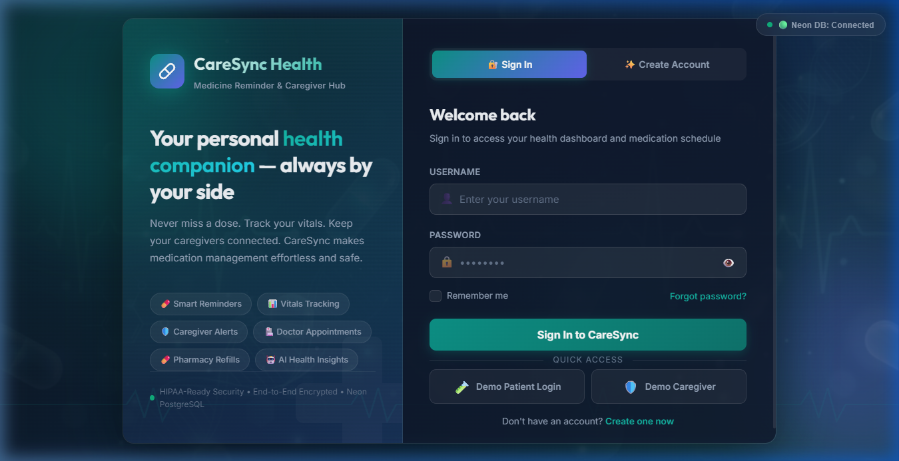
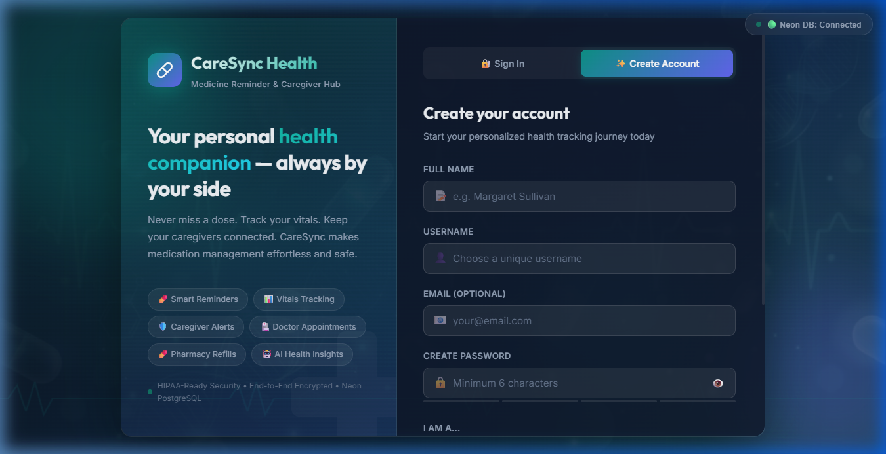
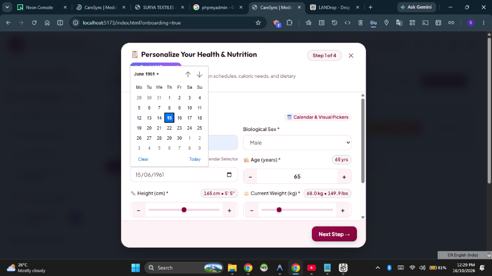
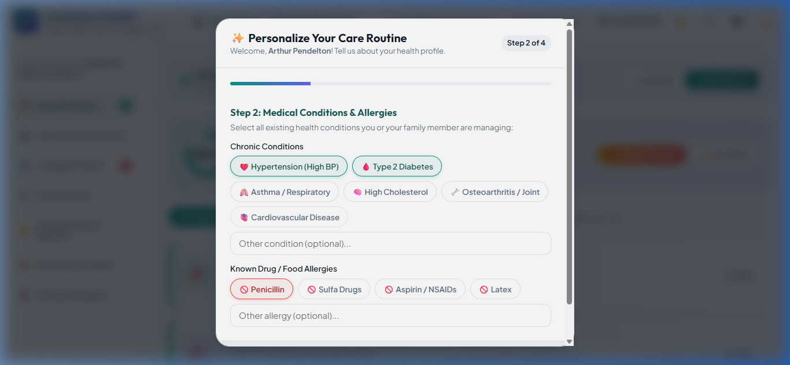
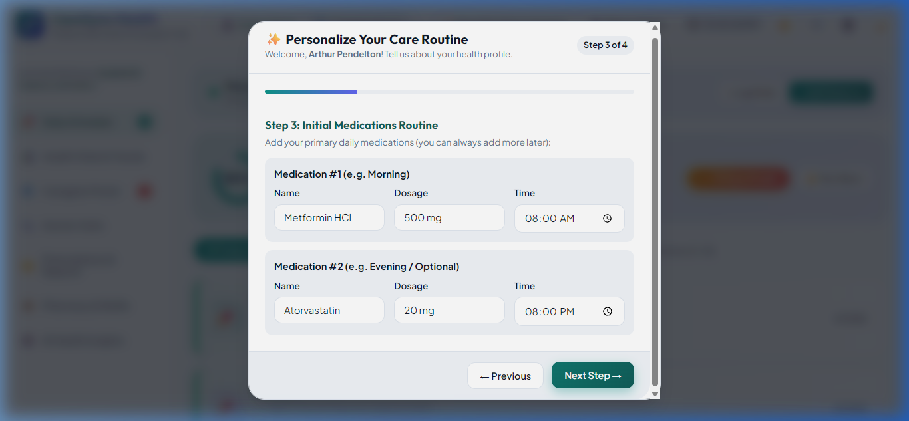
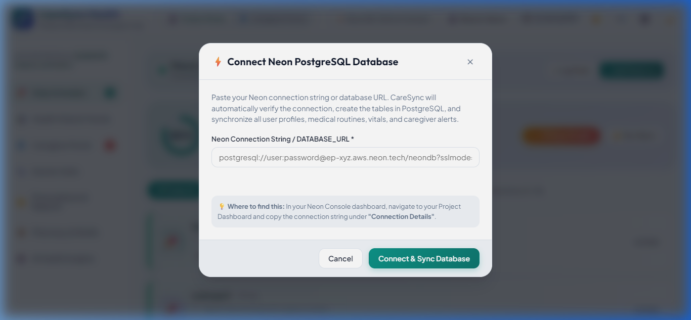
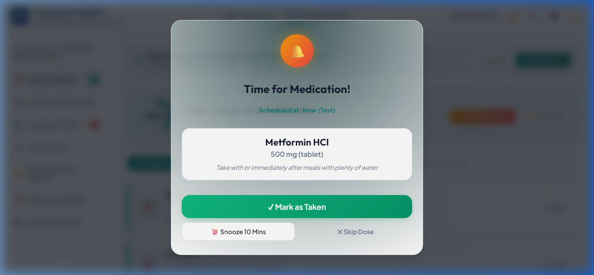

Documenting user input forms, modal dialogs, and interactive controls.

Input Fields: Email Address, Account Password (with toggle visibility), Remember Me checkbox.
Action Inputs: "Sign In to CareSync" button, tab switch to registration.

Input Fields: Full Name, Email, Password, Confirm Password, Role Selector (Patient vs Caregiver), Terms acceptance.

Input Fields: Biological Sex dropdown, Visual Date of Birth Calendar with decade pills (1940s–2010s) and month/year selectors, Age numeric stepper, Height dual slider (100–230 cm), Weight dual slider (30–200 kg).

Input Fields: Physical Activity radio cards (Sedentary, Light, Moderate, Very Active) and Health Goals radio cards (Maintenance, Weight Loss, Chronic Disease Care).

Input Fields: Multi-select condition chips (Hypertension, Diabetes, Cholesterol, etc.), Allergy chips (Gluten, Dairy, Nuts, etc.), and Dietary preference dropdown.

Input Fields: PostgreSQL connection URI input, SSL mode enforcement toggle, and "Test Connection" trigger button.

Action Inputs: "✓ Mark as Taken" (logs dose, triggers confetti, decrements stock), "⏰ Snooze 10 Minutes", "✕ Skip Dose" (escalates to caregiver).